This Story Map aims to help Homestead Valley residents understand our individual and collective wildfire exposure and develop practical plans to reduce it individually and collectively. Our homes share risks, and neighborly cooperation strengthens protection across property lines, entire blocks and ultimately all of Homestead. Our mission is to turn greater understanding into community projects that build a more resilient Homestead, one block at a time. Watch the Story Map overview and tutorial for a more detailed guide to using the Story Map.
Scroll to begin
Our Risk of Wildfire
Our Risk of Wildfire
For generations, Homestead Valley residents have worked together to preserve something unique and extraordinary - a verdant, artistic and literary community where unique, even quirky homes surprise around corners and on wind-blown ridgelines alongside miles of hiking trails through preserved open spaces. That's the Homestead we've got thanks to the historical vision of community members.
All this just twenty minutes from San Francisco.
We live here because of our community, because of this natural setting. It is part of what makes Homestead Valley so distinctive and valuable. And a big part of our risk
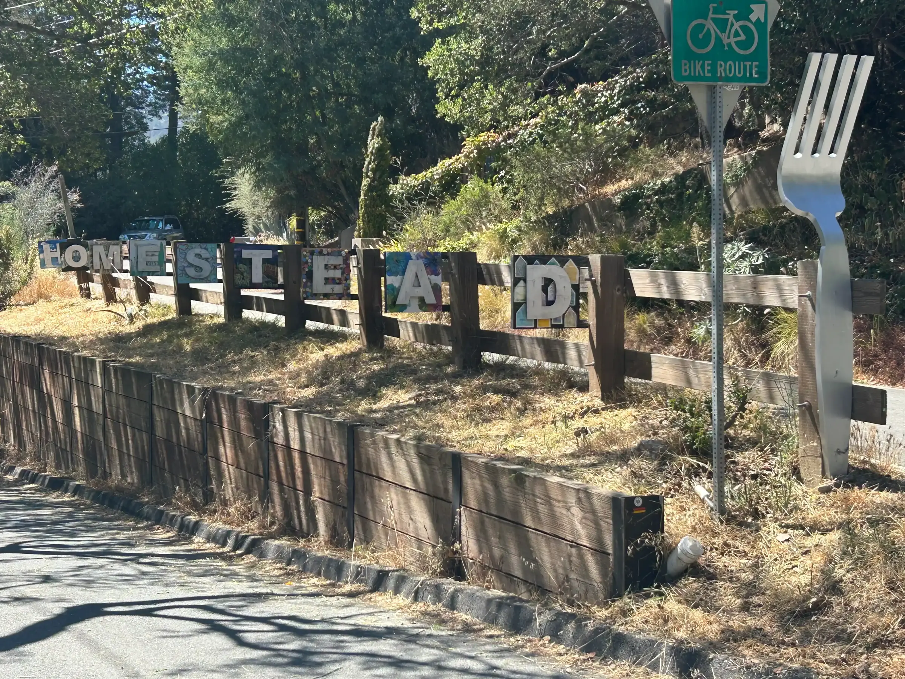
The Fork - where Homestead Valley introduces itself.Twenty minutes from San Francisco.
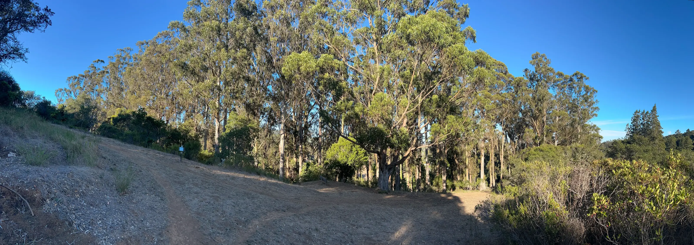
The eucalyptus forest along the Homestead Trail - beautiful, and a heavy fuel load.
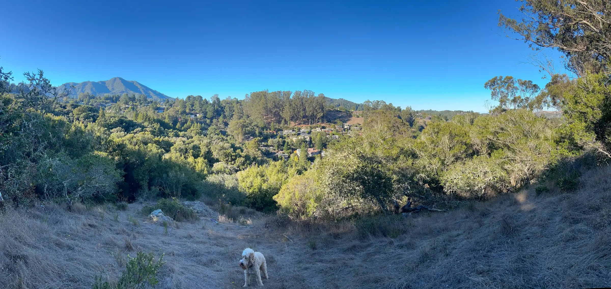
Homes, trees and ridgeline - and cured grass in the foreground.
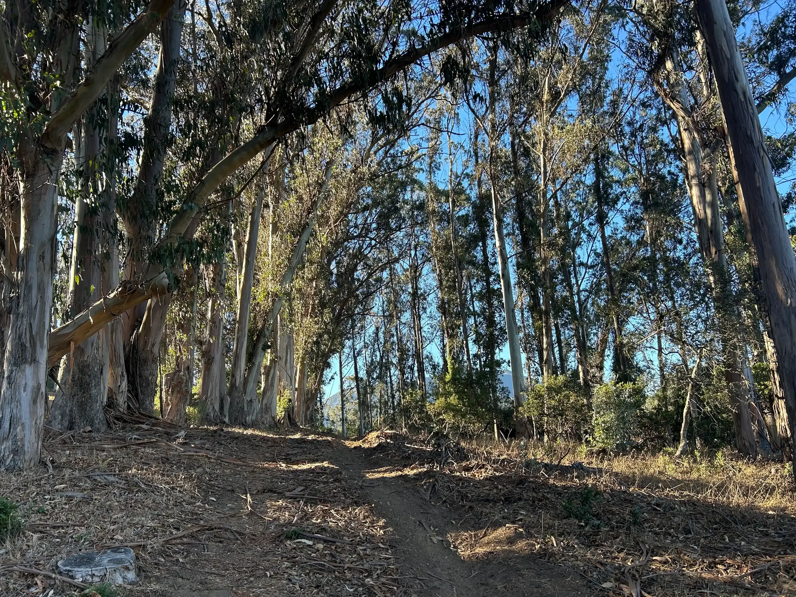
The eucalyptus above the bee boxes on the Homestead Trail.Stolte Grove - open space the community set aside, and stewards to this day.The Wildland-Urban Interface, defined.
It Has Happened Here Before
The threat wildfire poses to life and safety here is very real, even if a catastrophic fire feels distant or abstract - something that happens to someone else.
It has happened all around us. It happened here in the past. And it could happen here at any time.
In July 1929 a fire swept down off Mount Tamalpais and destroyed roughly a hundred homes on Summit Hill in Mill Valley, a neighboring community in the City of Mill Valley. San Francisco and Marin towns sent fire squads and police protection. The newspapers called it the Great Fire.
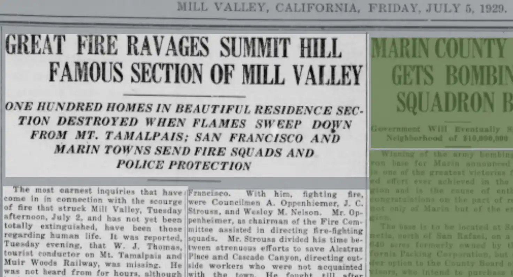
Mill Valley, July 5, 1929 - one hundred homes lost on Summit Hill, the next ridge over.The aftermath on Summit Hill - a chimney, and not much else.
The Consequences Don't End When the Fire Is Out
Wildfire also presents a more immediate and tangible concern: the potential for catastrophic financial loss - to affected victims obviously, but also to neighbors whose homes didn't burn but have to deal with the aftermath.
Affected families or individuals are often displaced for years. Those that can afford to often simply leave. Properties need to be decontaminated. Under-insured neighbors may never rebuild. Local schools are severly affected for years. Suffice to say it represents a difficult and destructive calamity to any community and is to be avoided at all costs.
The community - not to mention financial - effects of a catastrophic wildfire ripple across neighborhoods for a decade or longer.
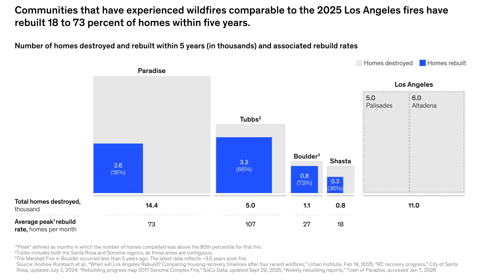
Comparable fires rebuilt 18–73% of homes within five years. Source: Urban Institute; City of Santa Rosa; SoCo Data; Town of Paradise.
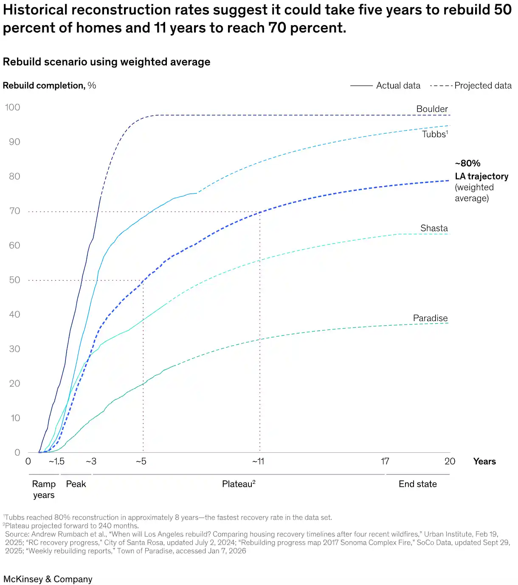
Historical reconstruction rates suggest five years to rebuild half a community's homes, and eleven to reach 70%. Source: McKinsey & Company.
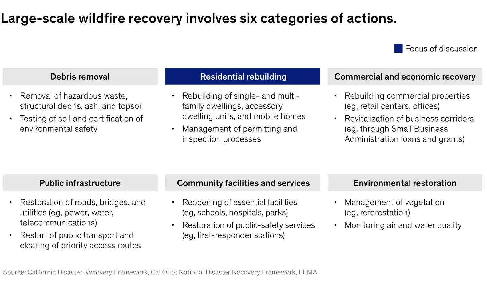
Recovery is not one task. Source: California Disaster Recovery Framework, Cal OES; National Disaster Recovery Framework, FEMA.
Why Wildfire Resilience Matters Now
That is why wildfire resilience matters now - not only because of what could happen during the fire itself, but to avoid the disastrous aftermath.
We are protecting more than structures. We are protecting people, homes, financial security, our very way of life and the community our kids and grandkids will inherit.
The good news is that wildfire risk is not simply something that happens to us. There are meaningful things we can do - individually and together - to influence what happens when wildfire reaches our community.
That is the subject and purpose of this Story Map.
Vision & Stewardship
A History of Vision and Stewardship
Homestead Valley has a history as a community of actively engaged neighbors.
In 1973 a bond measure was proposed and approved by Homestead community members securing our 88 acres of open space in perpetuity.
In fact, the community we are trying to protect exists today because earlier generations of residents chose to act together - and because of current community elders who continue to serve the community.
Between 2016 and 2018 the Homestead Firewise Committee and Land Trust raised over $1.2 Million in grants and matching funds dedicated to wildfire resiliency.
Community stewardship in Homestead Valley - building resilience together.
When Development Threatened the Hillsides
53 years ago, when real estate development threatened Homestead's remaining hillsides, residents organized to preserve the natural landscapes that remain central to our community today - and that provide a home for miles of maintained hiking trails with vistas across the valley and out to the Bay.
They had the foresight and the expertise to organize their neighbors and raise money through a bond issue, quite literally creating the Homestead Valley we enjoy today: close to 100 acres set aside, the trail network established, and the majestic Stolte and Three Groves protected.
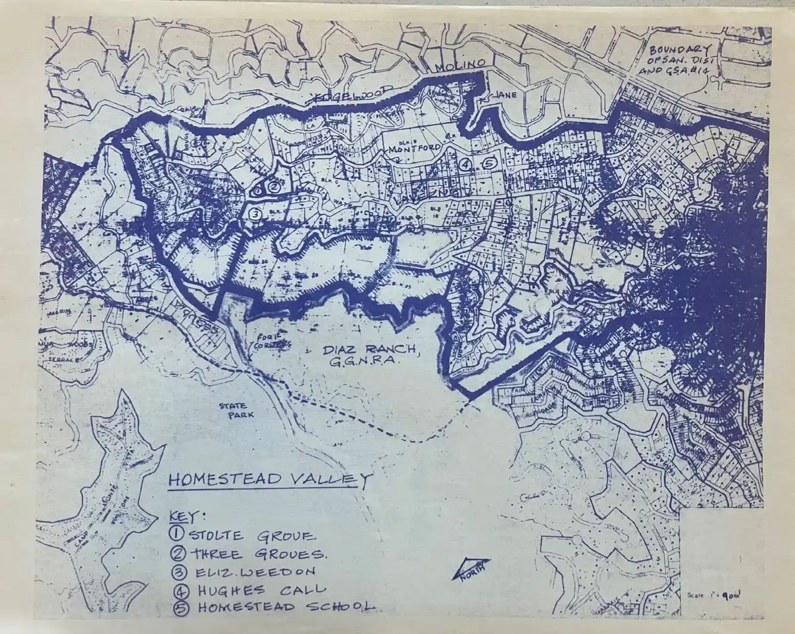
An Original Map Filed With Marin County to add the open space to CSA 14
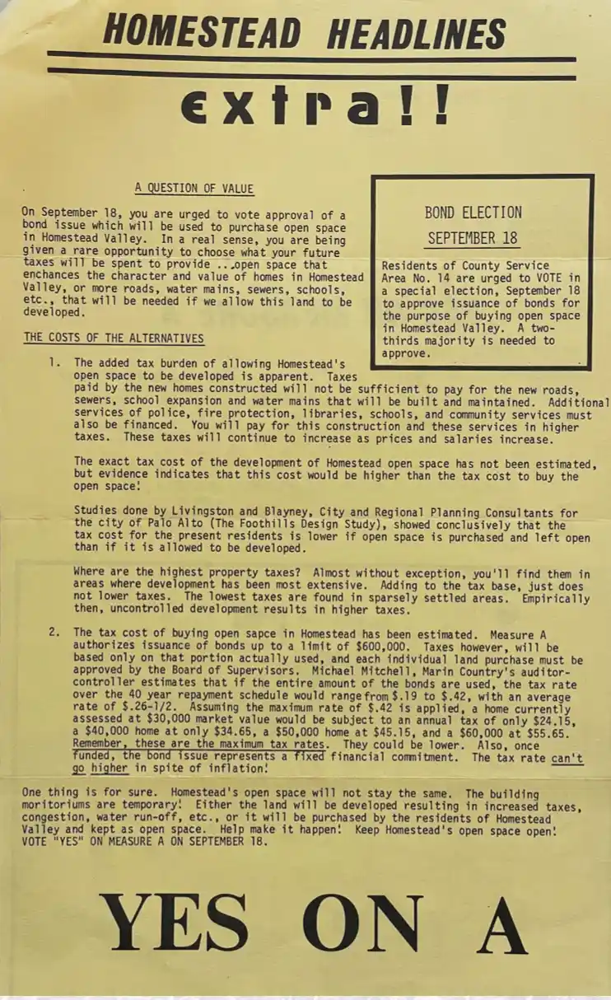
The bond campaign that set aside close to 100 acres - organized by neighbors.Homestead Valley, CSA 14, with open space shaded in green.
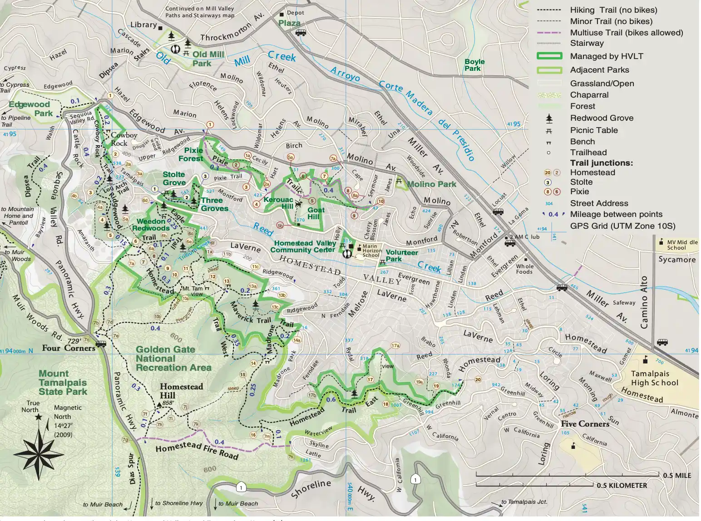
The trails and groves this bond issue bought are maintained by the Homestead Valley Land Trust today.
Homestead Has A Well Established Culture of Collective Action
More recently, partnerships with Southern Marin Fire, Marin Wildfire and other public agencies have brought additional expertise and resources to home hardening, vegetation management and neighborhood resilience.
We don't have to build a culture of collective action, we have to build on the one we already have.
Our challenge today is working togetherto live more resiliently within this landscape - and applying the same spirit of collective action that helped preserve Homestead originally to the challenge immediately around us the growing risk of destructive wildfire.
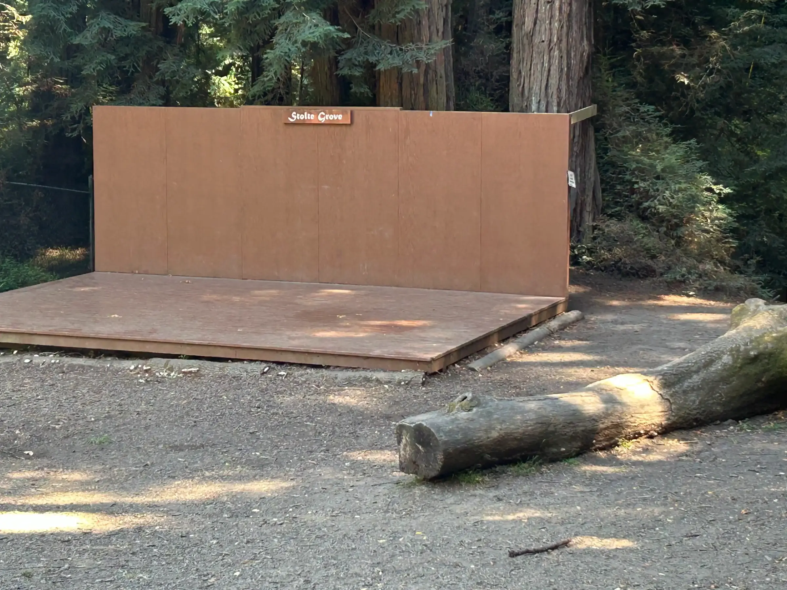
The Stolte Grove stage - built and maintained by the community, on land the community bought.
Culture of Preparedness
Fostering a Culture of Preparedness
We have neighborhood leaders who continue to protect and steward the Homestead Valley we enjoy today.
The Homestead Valley Safety Committee was formed in 2010 and has led a number of successful initiatives to make Homestead safer. The Safety Committee organized Homestead Valley into 69 neighborhood blocks, each served by a volunteer Block Contact who acts as the lead contact for neighbors in their block and assists with emergency planning and communications.
Block Contacts developed neighborhood contact lists, identified neighbors who might require additional assistance during emergencies, established evacuation procedures, and created neighborhood communication networks that will serve all of Homestead in a wildfire or other emergency.
Over 500 Homes Now Have Reflective Address Placards
The reflective address placard program was initiated almost ten years ago, is a national Firewise® program and was funded by grant monies raised by the Homestead Firewise® committee with matching contributions from community members. We've installed placards at close to 60% of neighborhood homes so far.
The Homestead Safety Committee continues to install green reflective address placards for community members which can be easily read from a moving fire engine in smoke and darkness.
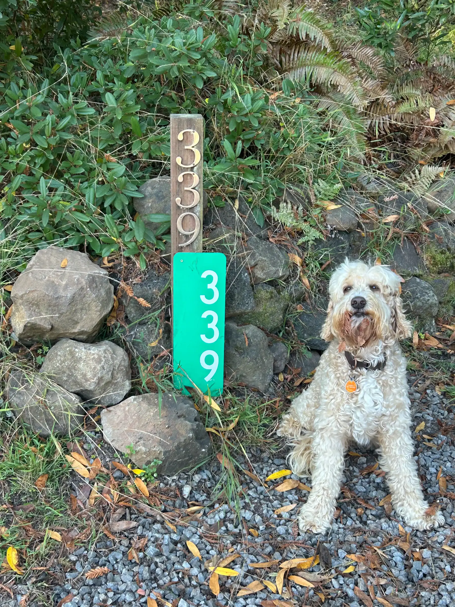
New reflective placard, old wooden number - and the difference a first responder sees at night.
How We Hardened the Community Center Against Wildfire
The Safety Committee led an effort to harden the Homestead Valley Community Center as both a demonstration project for wildfire resilience and an emergency refuge for the community. Current efforts focus on expanding Neighborhood Response Groups, improving emergency communications, strengthening neighborhood coordination, and continuing public education through regular newsletters and outreach.
Much of this work has been led by Jim Derich. A longtime Mill Valley educator and elementary school principal, Jim brought decades of emergency planning experience to Homestead Valley. Following the North Bay wildfires, between 2017 and 2020, he helped guide the Safety Committee's transition from earthquake preparedness toward a greater focus on wildfire resilience.
Follow the example of the Safety Committee's project to harden the Community Center. Listen to this 2025 panel discussion about how to reduce risk at your home and how Southern Marin Fire District can help.
The Community Center - hardened as a working demonstration project and an emergency refuge.Firewise community since 2015.Protecting from dried grasses with 5' Hardscape.Upgrade vents to 1/8" or finer gauge.Installed ember and flame resistant Vulcan vent.No embers are getting in that storage area.Entire under deck storage area successfully ember ready.
Firewise® - Turning Planning Into Action
As Homestead Valley prepared to become one of Marin County's first Firewise® Communities in 2015, then Fire Captain Carey Gloeckner of Southern Marin Fire District completed a comprehensive wildfire assessment. The report established the technical foundation for Homestead Valley's Firewise® designation and identified priorities for reducing community wildfire risk.
Homestead Valley became one of Marin County's first Firewise® Communities in 2015.
From Firewise Designation to Multiple Grants and Funded Projects
Homestead community member and HVLT consultant Mark Stahl was crucial to our initial Firewise® designation. After the award, he helped the HVLT secure two initial wildfire mitigation grants totaling approximately $400,000 with matching grants from the HVLT and neighbors bringing the total monies raised to over $1 million - kicking off the Firewise® program in Homestead with the removal of dozens of dangerous eucalyptus trees from HVLT land that threatened neighbors in the Pixie neighborhood.
The HVLT Continues to Target the Pixie and Ridgewood Eucalyptus Stands
We Have Invested Over 10× What Firewise® Requires
While Mark was central in establishing our status as a Firewise® community, it is now our very own wildfire resiliency expert, Dr. Stephen Quarles, who stewards the program.
Each year we have to maintain our Firewise® status by responding to a detailed survey from the certifying body, the National Fire Protection Association, NFPA. It is measured on two primary axes and, though rather simplistic - simply dollars, including DIY hours, invested into either home hardening or defensible space management - it demonstrates Homestead's continuing engagement with the process.
Keep track of all your receipts and your time spent hardening your property and report it to Stephen Quarles, Firewise Chair, at hvfirewise@homesteadvalley.org.
Today most homes have Class A roofs, metal gutters are common, roof maintenance has improved considerably, the fire department is very proactive in conducting inspections, and our tax dollars support the Marin Wildfire Prevention Authority. These improvements significantly strengthen our resilience in the face of a wildfire.
Southern Marin Fire District Is a Proactive Partner
Southern Marin Fire District (SMFD) conducts hundreds of annual home inspections each year. Each inspection results in a report the informs the homeowner about vulnerabilites and also actions that can be taken to reduce these vulnerabilities to wildfire.SMFD also supports the HVLT's open space fuel management efforts with budget, work crews and participation in educational and other community events.
About 15,000 home assessments (2023–2026): Class A roofs and metal gutters are community strengths; Zone 0 and ember-resistant vents remain the highest priorities.
Marshall Nau Explains How SMFD Supports Homestead Today
Marshall Nau is our Deputy Fire Marshal and has been an invaluable partner - educating, cajoling and convincing community members to upgrade ember-resistant vents and install gutter guards, and generally supporting the HVLT's vegetation management initiatives with work crews and project oversight.
The Homestead–Tamalpais Shaded Fuel Break Project has just received CEQA approval and represents a very exciting initiative toward Homestead's wildfire resiliency.
A shaded fuel break thins the understory and removes ladder fuels through a section of wooded area while leaving the overstory canopy in place - giving firefighters somewhere to stand and work, and de-energizing a fire before it reaches the built environment.
Homestead sits in the coastal range and is characterized by the steep hills and valleys that surround us - terrain that creates unpredictable winds and firefighting challenges for our first responders.
Homestead is far from a flat suburban grid. Heavy vegetation, narrow winding roads, and challenging conditions for first responders are good reasons to harden your home. They may not be able to defend your property
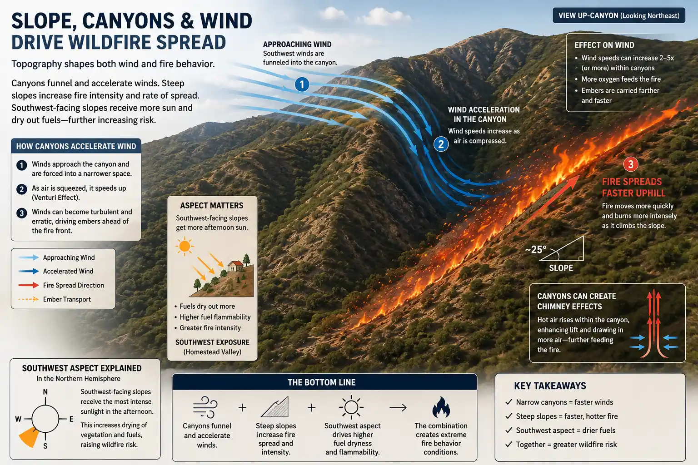
How slope, canyons and southwest aspect drive wildfire spread.
Slope and Aspect
While it may seem counterintuitive, homes on the northeast side of Homestead Valley, on the Pixie side of the valley, have southwest exposure combined with slope, which defines their primary elevated risk. Properties with southwest exposure tend to receive significantly more afternoon sun and are typically both hotter and dryer than their neighbors on the opposite side of the valley… streets like North Ferndale, Madrone Park Circle and Ridgewood don’t get the afternoon sun as directly and so tend to be damper and less prone to ignition.
That said, as the other vegetation density and elevation maps show, they are subject to extreme vegetation density, elevation gain and border on miles and miles of open space, which is the primary element of their risk profile.
We Are the Definition of the W.U.I.
Combine this topography with the thousands of acres of open space to our west - including untreated federal lands in the GGNRA - and it becomes clear why we are at elevated wildfire risk.
We have so many trees, invasives like eucalyptus, and we back directly onto thousands of acres of open space. Our homes sit interwoven with HVLT land, Marin County lands and federal open space.
The eucalyptus along the Homestead Trail - a continuous fuel bed running right up to the neighborhoods.
The More Likely Scenario Is Not a Wall of Flames
When most of us picture wildfire, we imagine a forest or brush fire burning out of control in the mountains - or perhaps a wall of flames advancing toward homes over a distant ridge.
That can happen.
However, the more likely scenario is wind-driven embers that travel well ahead of a fire, exposing many properties at once.
If those embers - or an approaching fire - ignite homes, vegetation, fences, decks or other combustible materials, the emergency spirals quickly out of control as one home ignition can result a 4 to 5 hours buring structure which produces major ember cast which theatens neihborhood and properties.
1.5–2 miles is an illustrative ember-travel distance, not a hard maximum - embers can travel farther under the right wind conditions.The five-stage sequence from fire front to neighborhood conflagration.
When Wildfire Enters the Built Environment
In a community like Homestead Valley, the worst case scenario is what could happen when wildfire enters the built environment - our neighborhoods.
Once multiple structures are burning, emergency resources will quickly become stretched. Firefighters will focus on evacuation, life safety and containing the larger fire rather than defending individual homes.
That’s when your individual preparation, home hardening and defensible space work could determine whether or not your home survives.
Once homes start igniting each other, the fire no longer needs the wildland. Treated, spaced homes interrupt those pathways.
Understand your Access Challenges
Terrain also shapes concerning realities around evacuation - our ability to get out, and firefighters' ability to reach and defend our homes.
Most of our streets are narrow and winding. If there is a fire at higher elevation and neighbors are evacuating while first responders are trying to reach the incident, traffic and access could further complicate matters.
Winding hillside streets, ridgeline roads, dead ends, cul-de-sacs and limited access and egress areas all mean the same thing:
Structure defense cannot always be assumed during a fast-moving incident. In an evacuation it's like a navigation map with all routes turning red.
Unique Homes, Extreme Topography and Mediteranean Climate
Our exposure is shaped by the landscape around us - the extraordinary beauty we enjoy every day. Homestead occupies a landscape of ridges, steep slopes, valleys and drainages, and our homes sit alongside a larger network of HVLT, Marin County and federal open space.
Pro Tip: Wildfire Is Part of This EcosystemUnderstand and accept that wildfire is a natural part of the California ecosystem. We will never eliminate wildfire, but by our actions and choices we can become significantly more resilient. Our choices matter.
Homestead Valley, Southern Marin County.
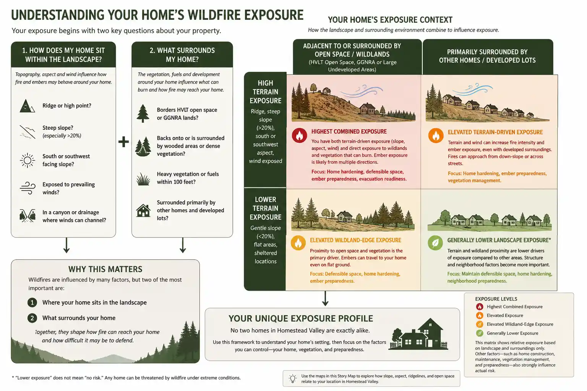
Understanding your home's risk - four exposure profiles, four different places to start.
See How Wind Can Change Exposure
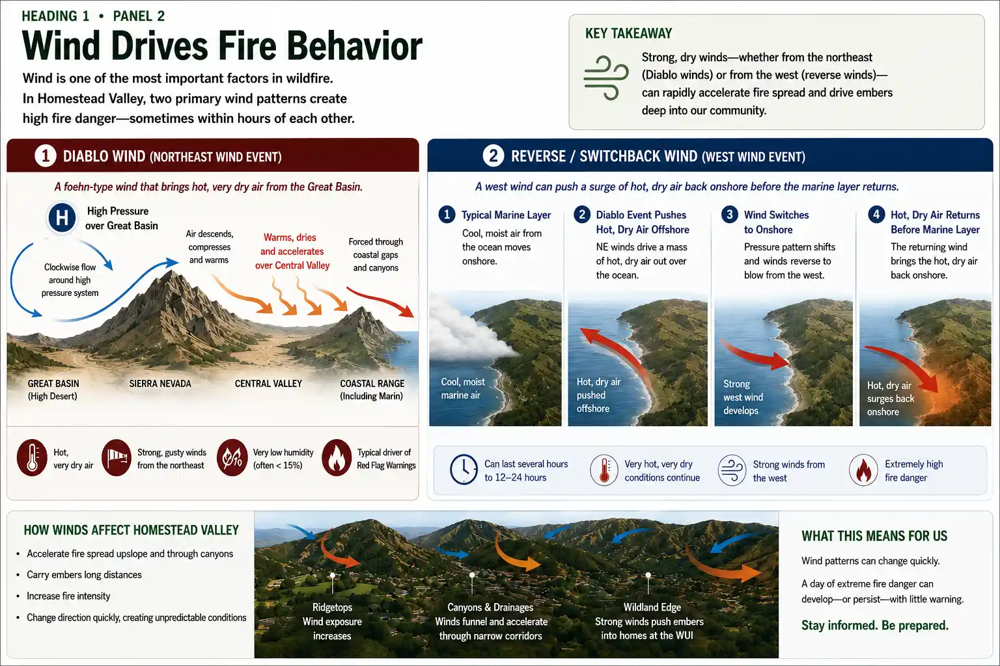
Diablo/offshore wind vs. reverse/onshore (southwest) wind scenarios.
Where Do We Have the Greatest Ability to Intervene?
We cannot change the terrain, and we cannot choose the wind.
So if the goal is to prevent a wildfire from becoming a neighborhood fire, where do we actually have leverage?
The answer begins with understanding how homes actually ignite - and how we prevent it.
Where Do I Start?
You Don't Have to Do Everything
So how do we plan for a risk that can seem overwhelming and abstract at the same time?
Wildfire mitigation can quickly feel that way. Home hardening. Defensible space. Trees. Vents. Fences. Decks. Mulch. Windows. Evacuation.
Two Ideas Worth Defining: Defensible Space and Home Hardening
There are two separate concepts here that most of us are familiar with, but that merit defining.
First, defensible space - sometimes referred to as vegetation management. These are risk mitigation measures that involve your plants, your landscaping and your trees. The terms you'll hear are Zones 0, 1 and 2, the most important being Zone 0.
Second, home hardening - structural retrofits made directly to your home to harden it against wildfire. Vent upgrades, gutter guard installations, replacing single-pane windows with dual-pane tempered glass, and installing fine mesh screening underneath decks and inside lattices to prevent ember intrusion.
This is most relevant and useful for lover rise decks, 4' or less above the ground, where flames from embers and grasses could ignite the under deck area and pass flame to the home.
Look outward to de-energize the fire; look inward to make the home ember ready.The main ember vulnerabilities on a typical home.
Reducing Vulnerability Over Time
It's helpful to think of wildfire mitigation as a process of reducing vulnerability over time. Either take it all on at once, or think of it as a three- to five-year process.
Ongoing progress and maintenance is what matters.
Pro Tip: Start With DIYRemove stored lumber and all combustible materials like tarps from under-deck areas and away from your home. Install gutter guards, replace vents and enclose latices and under deck areas in fine meshes 1/8" or smaller gauge to discourage ember entry.
First Look Inward From 5 Feet In - That's Zone 0
In terms of your landscaping, the first five feet around your home deserve special attention, because multiple embers landing in dry woody plantings directly against your home can create the conditions for ignition.
Wind-blown embers will pile up on decks or against garage doors - really into any nook and cranny on your roof or against your home.
Zone 0 before and after - and the non-combustible ground covers that get you there: gravel, decomposed granite, pavers, concrete.
How Embers Ignite Homes
If we accept the premise that most homes ignite in a wildfire as the result of ember intrusion - and we understand that in a wind-driven blizzard, embers can rain down on multiple neighborhoods well ahead of the main fire - the natural first step is to prioritize ember resistance.
Embers collect in gutters and beneath decks, enter vulnerable vents and openings, or ignite dry vegetation, leaf litter, wood mulch and other combustible materials around a home. Those initial spot fires then expose windows, siding, decks, fences and ultimately the structure itself.
If thousands of embers landed on and around your home today, what would they find?
What is the condition of your roof? Do you have flammable material under your deck? Are your vent covers 1/8" gauge or smaller?
Pro Tip: Think Like an EmberWalk around your house and ask: Where could an ember land, and where would embers collect? Small gaps and small accumulations matter. Wherever leaves gather - against walls, garage doors or under dormers - is where embers are likely to gather too.
Where embers look to land and lose their heat - and the same home, made ember ready.Same home, different outcome - small changes at entry points make a big difference.
After Inward, Look Outward to Zones 1 and 2
Your goal is to de-energize an approaching fire through vegetation management.
Your home does not exist in isolation. For the great majority of neighbors in Homestead, Zones 1 and 2 incorporate our neighbor's property. Fences, hedges, trees, decks, sheds and other combustible materials often create connections between properties. During wildfire, those connections can become fire pathways between structures.
On a slope - like most of our homes - continuous grasses, shrubs, trees and hedges create pathways for fire to climb toward structures. By eliminating ladder fuels and creating separation between groups of plants and trees, we interrupt those pathways and reduce and redirect the energy available to a fire.
Pro Tip: Manage, Don't EliminateThe goal is not to eliminate vegetation. It is to manage and maintain it strategically. Target combustible invasives and ladder fuels like vines that could pass fire from ground level up into the tree canopy.
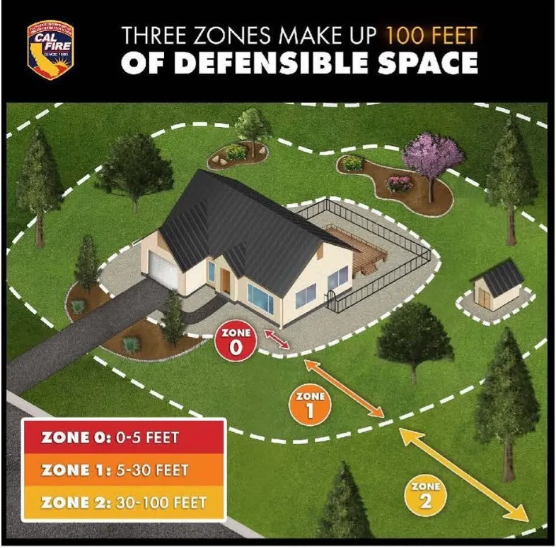
In Homestead Zones 1 and 2 often overlap with our neighbor's property or HVLT land.
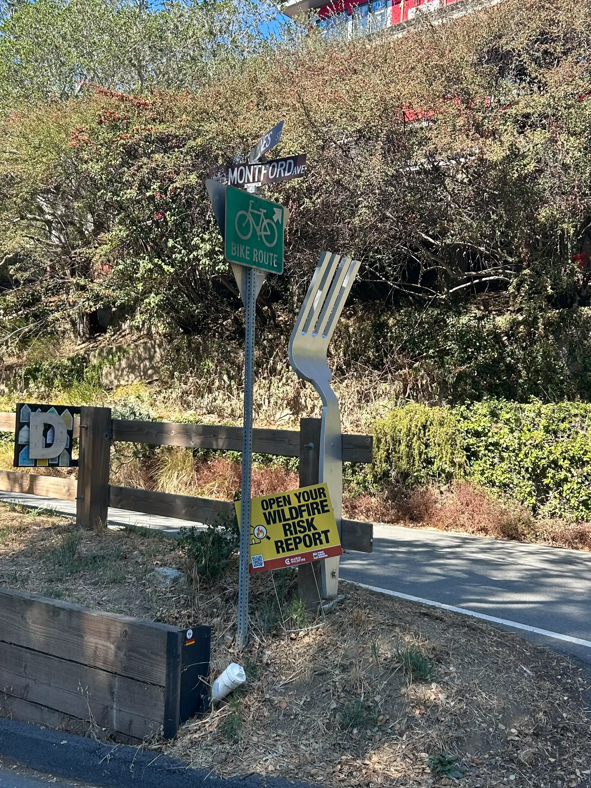
At the Fork - open your wildfire risk report and start with your own property.Vegetation management interrupts the fire pathway, even under the same slope, fuel and Diablo-wind conditions.
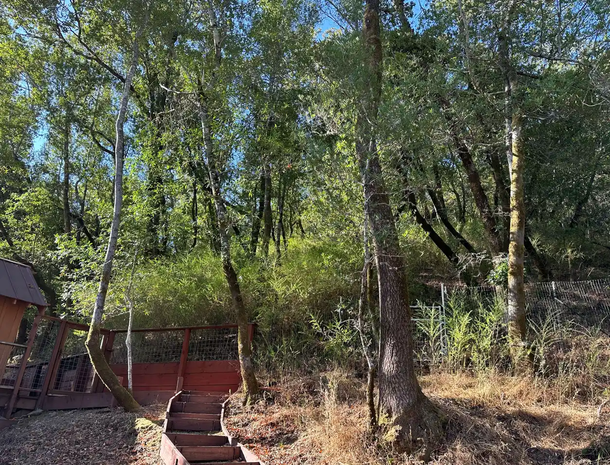
Sample defensible space before mitigation.
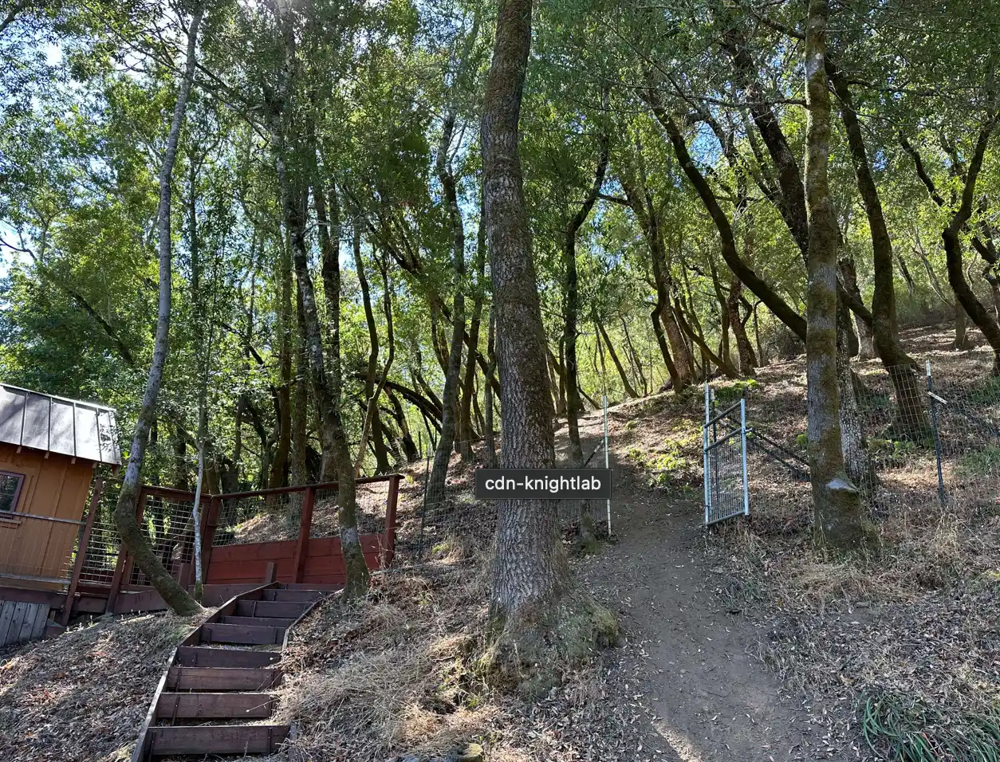
Sample defensible space after mitigation.
You Are Your Brother's Keeper
That is why individual preparedness matters - but neighborhood preparedness is where we can really move the needle in Homestead. While a wildfire is impossible to predict, if a fire can be stopped from exploding from one house to another, the threat of neighborhood destruction goes down.
Two homeowners can create better vegetation separation along a shared boundary. Several can coordinate tree work or address a continuous fence or hedge. A group of homes can upgrade vulnerable vents, organize a cleanup day, create shared defensible space or collaborate on tree removal.
Individual improvements begin to reinforce one another. Resiliency improves.
Neighborhood participation compounds - around 70% of homes hardened is where the curve bends.
Start With Your Block
Make Your Block Your Unit of Action
As discussed earlier, the Homestead Safety Committee created a block and Block Contact system that is an excellent foundation for proactive community risk mitigation.
Every block in Homestead is unique, and each has its own vulnerabilities.
Pro Tip: Don’t be afraid to be a leader. Talk to your neighbors, reach out to the safety committee. Organize a Zoom call or better yet a block meeting.
Most blocks have a shared condition like this one - a problem no single homeowner can solve alone.
Analyze My Own Block
So much of our risk is associated with the way our homes sit in their natural setting - the topography, the aspect, the prevailing winds, access and egress issues, and the close proximity of neighboring homes.
Which means the community-wide view only takes you so far. The next step is to zoom all the way in, to your street, with the same layers you have just been reading at the community scale.
Keep scrolling - the Block Explorer below lets you explore your particular block.
Know Your Block Contact
Make sure your block has current contact information for all your neighbors. Know your neighbors - and whether older residents, people with limited mobility or others may need assistance preparing for or responding to an emergency.
Pro Tip: Print the ListEach Block Contact has compiled a list of neighbors, including people living alone, elderly residents, and those needing assistance for whatever reason. Print this list. Know which neighbors need help, and in a shelter-in-place or evacuation order, try to check in.
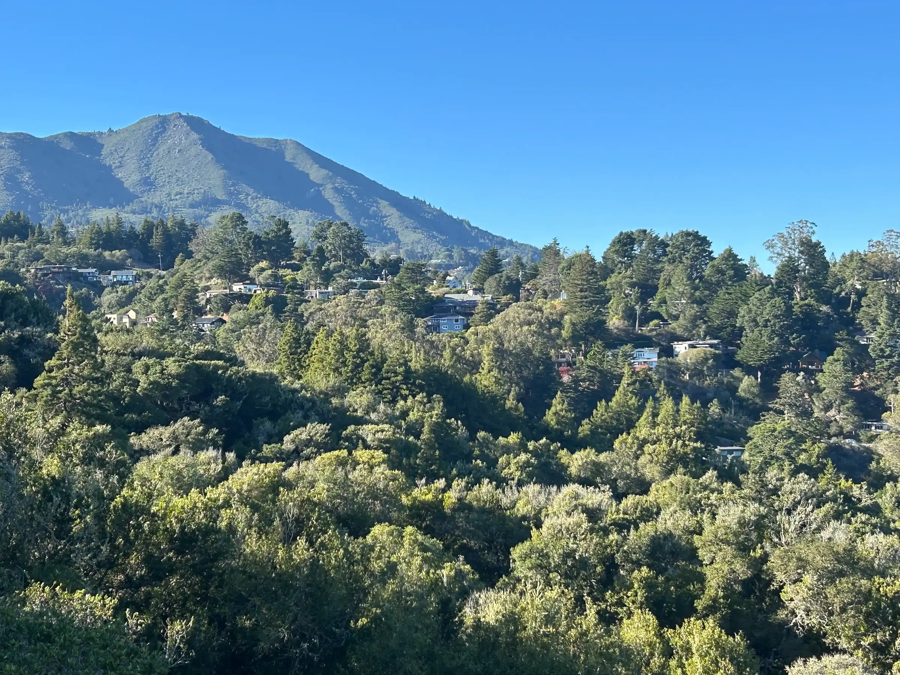
Don't be afraid to be a block leader and organize a meeting with your neighbors.
Consider Making a Plan to Walk the Block Together
Look for shared vegetation, fence lines, open-space interfaces and other conditions that may affect several properties - or simply cooperate on tree removal.
If you back up to HVLT land, there are available funds to collaborate on eucalyptus removal.
And choose something achievable. One shared vulnerability. One shared project.
Neighborhood Access and Egress Routes and Ladder Fuels
Help Is Available
Help Is Available to Get Started
Cost, physical limitations or simply not knowing where to begin can prevent people from acting.
You don't have to do it alone.
There are multiple sources of information on how to prepare for wildfire, including two very comprehensive story map projects recently published:
Southern Marin Fire District story map - specific to Southern Marin, with excellent risk mapping, potential fire mapping and evacuation planning information.
FREE DIY-Support is Available
The monies from the original Firewise grants still support two amazing & FREE service offerings to neighbors by the Homestead Valley Land Trust. The first is the debris box program. Just send an email to firewise@hvlt.org and have a 10 or 20 yard debris box installed in front of your home. Involve your neighbors and take care to fill the box well with cuttings and branches and any other vegetative matter you want removed.
Managed by James Young, he'll have the box delivered, mark the area with cones, and arrange for it to be removed when you have filled it.
It's a great way to cooperate with neighbors and reduce neighborhood fire fuel at no expense.
Alternatively set your cut wood up street side and arrange for FREE chipping service and removal also available through SMFD.
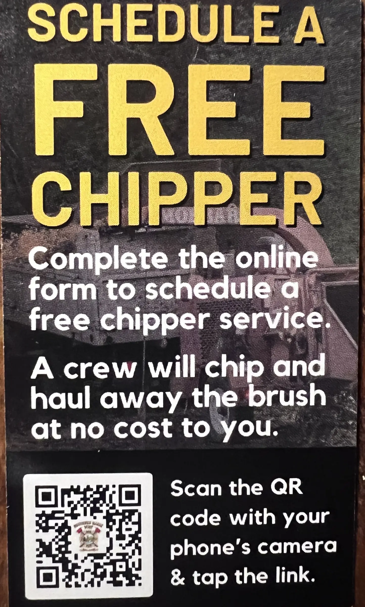
SMFD Chipper - QR code for more information and to schedule a chipping service.
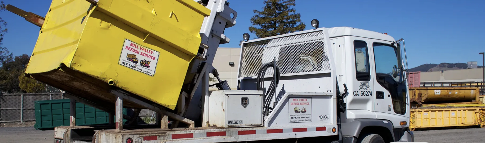
Firewise Debris Box - email firewise@hvlt.org to have one delivered.
Grants are subject to open and closed periods and have different requirements for award. Grants - and actual work teams - can be especially important for older residents, people with access or functional needs, and households for whom the cost or physical demands of the work create a barrier.
Southern Marin Fire District is also available to support targeted defensible space projects and to conduct updated inspections, including for property transfers and resales.
Marin Wildfire Prevention Authority - The Ember Ready Program
The MWPA has introduced a highly focused pilot program to upgrade home vents to a 1/8" or smaller standard in select neighborhoods. The program is called Ember Ready, it offers grant money to homeowners and vetted contractors for vent upgrades.
By implementing wildfire mitigation at a neighborhood scale, we maximize the benefit of risk reduction for all homes involved.For Homestead Valley, the Ember Ready program will focus on upgrading vents to ember and flame resistant- one of the most cost-effective ways of reducing the risk of home ignition.
SMFD will provide direct assistance funds to participating homeowners to reduce costs (grant money and resident reimbursement) In addition, residents may receive discounts on materials and labor from participating contractors, with discounts increasing as more residents participate.
Ember Ready - Marin Wildfire Prevention Authority.
California - Safer From Wildfires
California also offers grants through the Safer From Wildfire program and other assistance for wildfire mitigation.
Safer from Wildfires is a ground-up approach to wildfire resilience with three layers of protection - for the structure, the immediate surroundings, and the community.
Following these achievable steps and documenting them can help you save money on your insurance.
Safer from Wildfires was created by an interagency partnership between Insurance Commissioner Ricardo Lara and the emergency response and readiness agencies in Governor Gavin Newsom's administration.
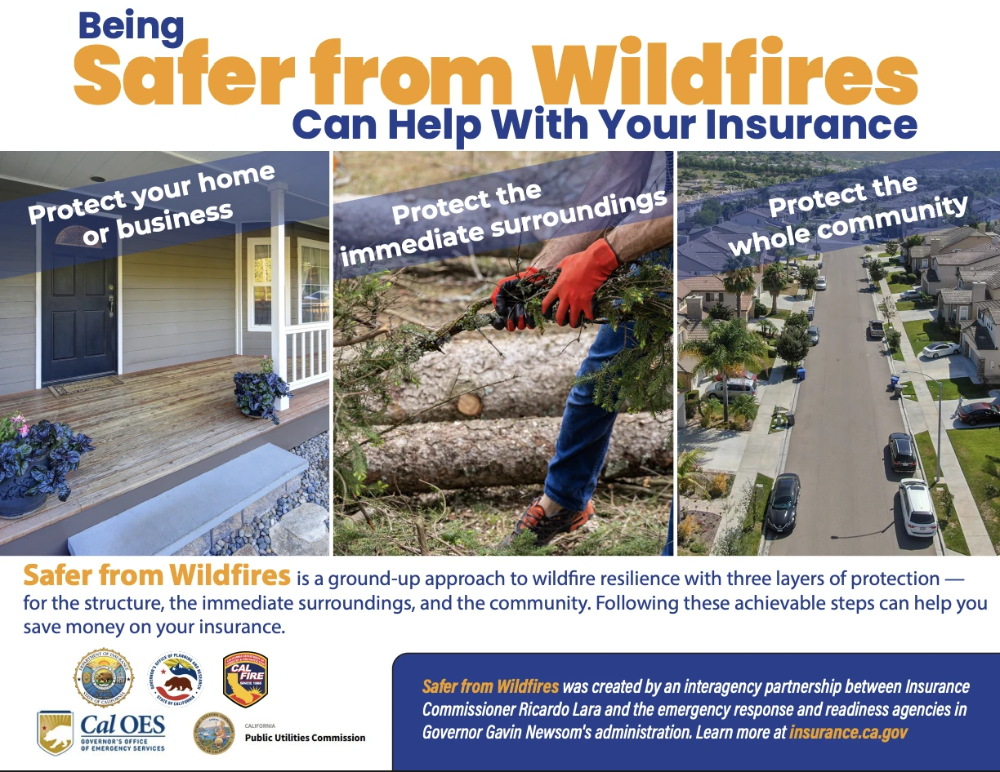
Safer From Wildfires - California
IBHS - The Wildfire Prepared Home Designation
The Insurance Institute for Business and Home Safety, an independent, nonprofit scientific research organization funded by the property insurance industry, has created the Wildfire Prepared Home Designation.
The IBHS Designations are stringent and ahead of the regulatory curve for existing homes. But if you are under threat of losing your homeowner's policy, facing a massive premium bump, or being relegated to the FAIR Plan, the Wildfire Prepared Home Designation is a strong metric to aspire to.
Reaching it might just enable you to keep your homeowner's policy.
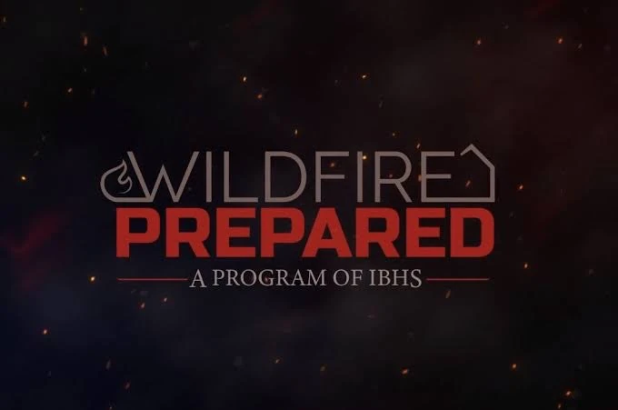
Wildfire prepared - a program of the IBHS.
Now It's Our Turn
Previous generations worked together to preserve the Homestead Valley we inherited.
When we look back on the history of the Homestead community, it's impressive what earlier generations accomplished: open space preservation and stewardship, green spaces, trail networks. They took action, they lobbied, they organized, and they succeeded in creating the Homestead Valley we enjoy today.
Now it's our turn. The threat is different, to be sure, but the need for consensus and action is arguably even greater.
Resilient individual homes make resilient blocks, which make a resilient Homestead Valley.
Resilient Neighbors. Resilient Neighborhoods.
Acknowledgements
Thank You
Producing this Story Map documentation of our wildfire risk in Homestead Valley would not have been possible without the support and guidance of several crucial community members and beyond.
First, Jim Derich has been an invaluable resource and conduit to the people, boards and agencies required to approve and fund this project. Without his endorsement this project wouldn't have gotten off the ground.
Wildfire resiliency expert Dr. Stephen Quarles has been an amazing resource, directing, correcting and participating in the content presented in the Story Map.
Mark Stahl, consultant to the HVLT and former community member, lit the spark that led to the project and has been an invaluable resource, engaging Marin County Parks and Southern Marin Fire District in support.
The endorsement of Brian Spring, HVLT Board President, and his patience with extended timelines as the technical elements were addressed provided support and encouragement to push forward.
Marshall Nau, Deputy Fire Marshal from SMFD, very graciously contributed to the narrative as well as provided drone overfly video of Homestead Valley.
Jim Chayca and Kat Knect from Marin County Parks, responsible for CSA 14 budgeting oversight, enthusiastically approved, supported and ultimately green-lighted the project.
And finally, thanks to my excellent consultant Abdelrahman Abdallah[Upwork · LinkedIn], who has been patient and professional as we have strived to produce the most comprehensive study possible.
James Young
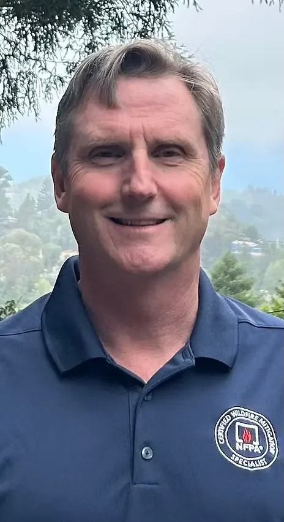
Home Wildfire Defender was founded by James Young, MBA, in the wake of the catastrophic Los Angeles fires in early 2025, where emergency response was overwhelmed and over 16,000 homes were lost, leaving thousands of residents without a home.
James' skill set straddles the juncture of technology, communications and elite client service.
Certified by the NFPA as a Wildfire Mitigation Specialist (CWMS), he is available to work with individual homeowners as well as municipalities, government agencies and Firewise® communities to document and assess primary wildfire vulnerabilities, provide project oversight and documentation of retrofits, and advocate on behalf of homeowners with their insurers.